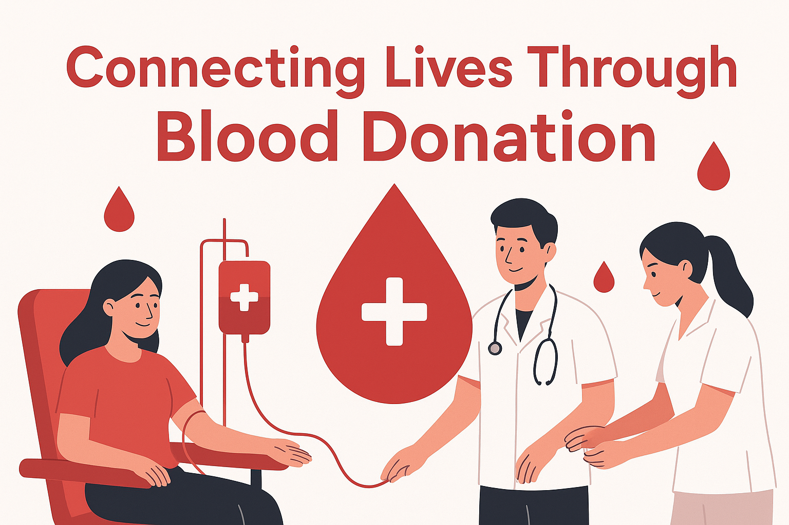

Fast Matching
Search donors by blood group and city, then move directly to call or profile details.
BloodConnect helps patients, families, and volunteers locate compatible donors quickly with a clean, secure, and responsive healthcare experience.

Every interaction is focused on clarity, accessibility, and fast donor action.
Search donors by blood group and city, then move directly to call or profile details.
Clean donor cards surface blood group, location, notes, and contact information without clutter.
Request workflows and dashboards are shaped for coordinators, volunteers, and care teams.
Join the donor network or search for compatible donors with a secure account.